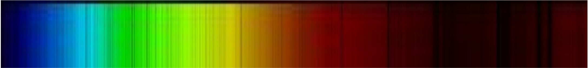
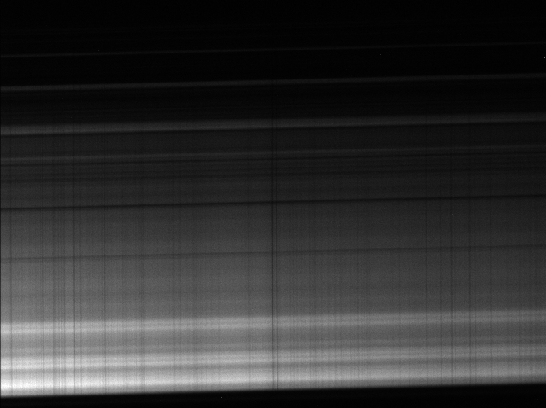
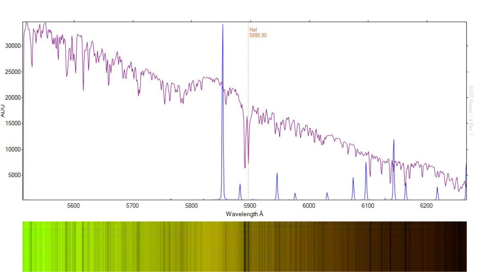
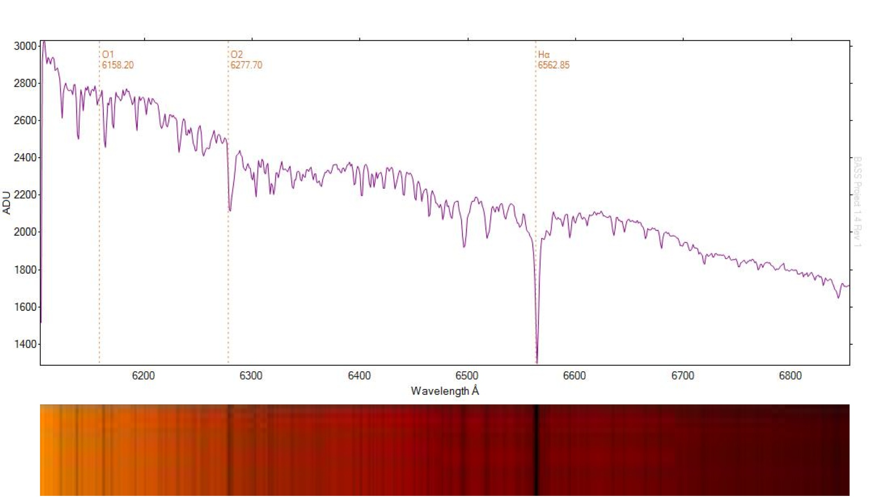
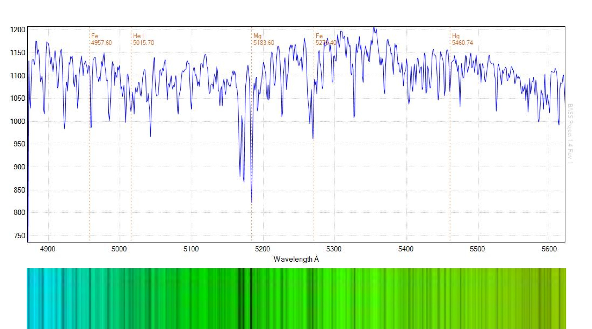
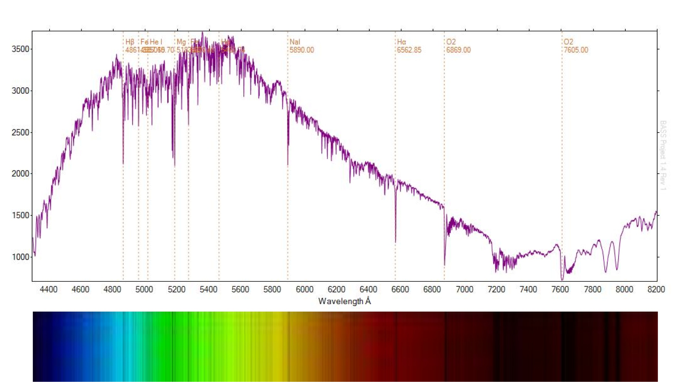
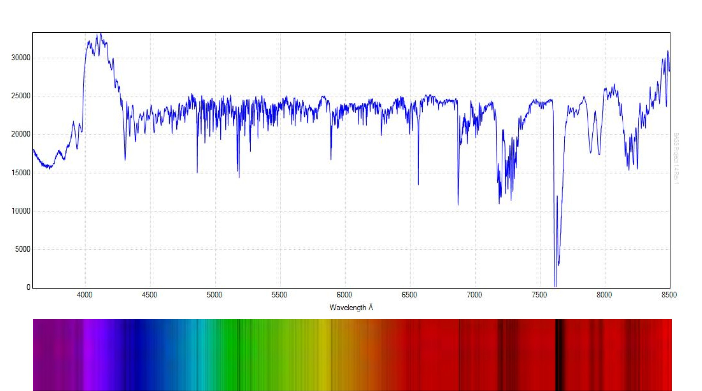
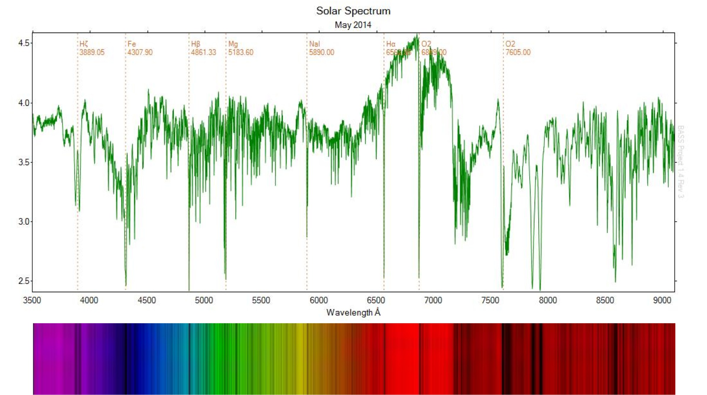
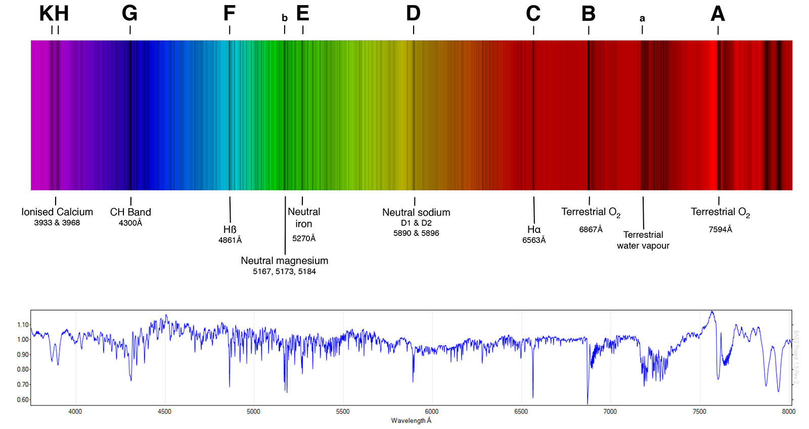

Further calibration and testing of a Spectra L200 spectroscope on the solar spectrum (pointing the telescope at the day time sky) using the integrated neon lamp for calibration. Click “Continue reading” below to see the entire analysis.


Equipment
Telescope: DSI RC14C (0.35m, f/7 Ritchey–Chrétien)
Imaging Camera: Atik314L+ (1392x1040, 0.65µm)
Spectroscope: Spectra L200 with 600 l/mm diffraction grating
Images
Images of the sky were taken at overlapping micrometer intervals. Figure 1 shows a typical image of the solar (blue sky) spectrum centred at the sodium doublet at 5895 Angstroms. The exposure is 4 seconds at Bin2, with the slit adjusted to approximately 25 microns on the slit adjustment dial.

The camera has been [incorrectly] positioned to present 'vertical' lines. The residual tilt is evident.
Calibrated Profiles
Figure 2 shows a solar profile as it appears in BASS (purple line) together with the neon calibration profile (shown in blue).
- Average dispersion = 1.08 Å/pixel.
- R = 2465 @ 5890.2 Å
The sodium doublet is prominent and well aligned with the published measurement at 5895.90 Å.
A synthesised colour strip produced in BASS is included below the profile (click to enlarge).

Figure 3 shows the region from 6100 Å to 6900 Å and features hydrogen alpha absorption at 6562.85 Å (click to enlarge).

Figure 4 shows the magnesium triplet at 5180 Å. Because of the absence of neon calibration lines at this wavelength range, the image was calibrated using a published value for magnesium at 5183.60 Å together with the previously calculated dispersion of 1.08 Å/pixel (click to enlarge).

Figure 5 shows a composite solar spectrum ranging from 4400 Å to 8200 Å. The profile is a combination of 6 images combined using the mosaic feature in MaxIM DL. It shows a number of common features, including atmospheric oxygen at the red end of the spectrum.

Update 9th June, 2014 - Another solar spectrum composite, this time presented with the continuum removed (using the BASS continuum shaper tool): 

Upate 16th June, 2014. Reprocessed data using the new stitching feature in BASS.

Update 1st September, 2014:
Some "Fraunhofer" features (click to enlarge):
